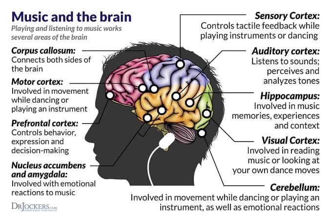

The Science of Music and how it affects our Brains

The basics of neuroscience can be quite complex, but let's try to keep it simple. The brain is made up of billions of neurons, which are the cells that process information and send signals to each other. These signals are called neural impulses, and they're what allow us to think, feel, and experience the world around us. Music can affect these neural impulses in different ways, depending on the type of music and the individual listening to it.
Music can trigger the release of neurotransmitters like dopamine, serotonin, and oxytocin, which can then affect our moods and emotions. Music can also affect our heart rate, blood pressure, and other physiological responses. It can even trigger the release of hormones like cortisol and adrenaline, which are involved in the body's stress response. Music can also activate mirror neurons, which are neurons that help us understand and empathize with others.
Research has shown that listening to music can help improve mood, reduce stress, and even boost memory and cognitive function. Music can also help us connect with others and express our emotions.
One of the first things that happens when music enters our brains is the triggering of pleasure centers that release dopamine, a neurotransmitter that makes you feel happy. This response is so quick, the brain can even anticipate the most pleasurable peaks in familiar music and prime itself with an early dopamine rush. Beyond simply making you feel good, however, there's evidence that music can even be good for your health. Research has shown that listening to music is associated with upticks in immunity-boosting antibodies and cells that protect against bacteria and other invaders. Music has also proven to be effective across a variety of treatment scenarios for conditions ranging from premature birth to depression to Parkinson's disease.
How does music affects our Moods and Emotions and the Science behind it
There are different parts of the brain that are involved in processing music. The auditory cortex is the main area that processes sound information, including music. It's located in the temporal lobe, on the side of the brain. The amygdala is also involved in processing music, especially when it comes to emotions. The hippocampus is involved in memory and learning, and it can be activated by music. Finally, the prefrontal cortex is involved in complex thinking and decision-making, and it can also be activated by music. Does that help explain how the brain processes music?
music can affect our moods by triggering the release of neurotransmitters like dopamine and serotonin, which are associated with pleasure and happiness. Other studies have found that music can change our heart rate and blood pressure, and even lower levels of stress hormones like cortisol. It can also increase the release of oxytocin, which is associated with social bonding and trust. You could write about specific examples of how music can affect our moods, like how upbeat music can make us feel more energetic and positive.
music can affect our emotions, both positive and negative. For example, sad music can trigger feelings of nostalgia or melancholy, while happy music can make us feel more optimistic and hopeful. Different types of music can also trigger different emotions - for example, classical music can make us feel relaxed and calm, while heavy metal music can make us feel more aggressive or angry.
Different types of music can trigger different areas of the brain in different ways. Studies have shown that listening to classical music can activate the frontal and temporal lobes, which are involved in complex thought and language processing. On the other hand, listening to heavy metal music can activate the amygdala and the limbic system, which are involved in processing emotions like fear and anger. Different types of music can also trigger different levels of dopamine and serotonin, which are neurotransmitters that play a role in pleasure and happiness.
For example, classical music can be soothing and relaxing, while rock music can be energizing and invigorating. Country music can evoke feelings of nostalgia, while hip-hop music can be inspiring and empowering. Even within each genre, there can be a lot of variation. Some songs can be upbeat and fun, while others can be more mellow and introspective....
3 Comments
Leave a Comment